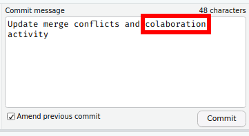

‘Disaster’ Recovery
Reset your Repo
Git allows you to recover from mistakes by allowing you to revert to previous versions.
If you commit your changes and push them to GitHub, often this becomes your “worst case scenario.” Now if you have an error,
Save a copy of your project directory (or the files that changed) somewhere else safe, just in case, and
Rename your local repository
Clone the repo to your machine again
Copy any necessary files to the new directory and check that everything works
Stage, commit, push
We will practice this in the “Break it” activity.
Revert to the last commit in the RStudio GUI
If you prefer using RStudio’s visual git commands, you can revert to the last committed version of a file by clicking on the “diff” button () and selecting the file you would like to revert. At the bottom, you will see all the changes you made (deletions in red, additions in green).
To revert all the changes, select the file you want to undo and click “revert” at the top of the window.
Amend the last commit
Before pushing your changes, you can amend the last commit in RStudio. Start by making a minor edit, so the files are shown in your Git tab again. Stage the file and click commit. Before committing the file or writing a commit message, click the box next to “Amend previous commit.” You can now edit the commit message.

(More) advanced Git
Using Git through RStudio is convenient but can be limiting. You can run various commands through the terminal, allowing for more advanced functionality.
Undo your last (unpublished) commit
If you need to revert to a state before your last commit and have not pushed your changes to GitHub use the command line. Running $ git reset -- soft HEAD~1 in the terminal (or terminal tab in RStudio) will take you back to where you were right before you hit commit with all the same edits. This can be helpful if you push too much at once or realize you want to remove a file from the last commit.
Run git reset --hard HEAD~1 in the terminal (either in R or on your computer). This is a hard reset to where you were at the last commit. When you need it, it’s great. But be careful when using this since you will lose changes to files!
Undo a published commit
If you made significant errors, broke your code, accidentally introduced a bug, or tried something that just didn’t work (and weren’t using branches) you should probably just let it go, or you can try reversing the changes. It is probably best to avoid getting to this point but if you need it, here it is.
Start by exploring the commit history to find which commit you would like to revert to.
- On GitHub, click on the file you want to revert and click on
historyon the right of the screen.
- Scroll through the history to find the commit you would like to revert to. Click on the blue numbers, the commit ID. You will see the “diff” for that commit and a commit hash on the right.
If you are certain you want to revert to this commit, enter
$ git revert <the commit hash or id>into the terminal.
Create a branch based on an old state
If you aren’t certain about taking such drastic actions as reverting or resetting, it is possible to create a new branch (again, I recommend you read up on branches) based on your repo’s state at a previous commit.
$ git checkout -b <new branch name> <hash or id>